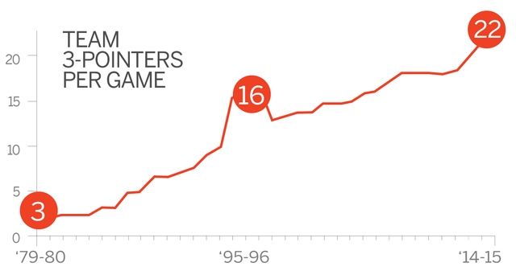

1979-80赛季，NBA正式引入了三分球，那是兼并ABA后的第三年，是ABL发明三分球后的第18年。
但在之后相当长一段时间内，三分球相当不受NBA那些传统教练和球员的待见， “这（三分球）不是什么好球，这就是街球！” 众多周知的以三分球著称的拉里-伯德说：“我真的不喜欢三分球。帕特-莱利也称，三分球就是花拳绣腿，骗人的玩意儿。1981-82赛季，莱利首次执教湖人就夺得了总冠军，但整个赛季他们一共命中了13个三分球。虽然到了1986-87赛季，莱利的湖人队已经在NBA最爱投三分球的球队中排名第六。
“即使这样，三分球仍然不是决定我们生死的东西，我们仍旧和对手短兵相接，将匕首插到对手的喉咙上。”莱利说。
但是现在形势已全然不同。本赛季至今，联盟最爱投三分的火箭队场均三分出手高达38.9次，排名第二的骑士队也达33.6次，两队之和达到了72.5次，而1985-86赛季联盟所有球队场均三分出手全部相加才只有76.6次。
用更远距离的投篮制造更大的成功，是今天联盟所奉行的准则。

（图表来源：NBA中国官方网站）
但是去年的总决赛似乎又告诉人们：“三分球并非万能。”骑士队（场均三分出手24.3次）比勇士队（场均三分出手35.9次）平均每场少投11.6次三分球，却最终捧得奥布莱恩金杯。
可这并不妨碍联盟中的各支球队出手更多的三分球。本赛季联盟最不爱投三分球的公牛队场均三分出手次数也达到了19.4，排名倒数第二的活塞队是21.5，倒数第五的步行者队是22.7，而两年前联盟30支球队场均三分出手次数不过是22.4。的确，投了更多的三分球的火箭队和骑士队获得了更多的胜利，可三分出手次数紧随其后的篮网队（场均三分出手33.4次排名联盟第三）截至目前胜率只有25.9%。
三分球到底有什么效果？笔者对1985-2017赛季（NBA历史统计原因，仅存1985年之后的单场比赛数据）常规赛各球队三分球数据以及自三分球引入NBA以来各赛季常规赛效率值Top50的球员三分球数据作进一步分析，以期得出一个较有说服力的答案。
1985-2017各赛季球队胜率与场均三分出手次数的关系，呃……好像并没有什么关系
看起来投多少三分球和赢多少场比赛并没有什么关联，这似乎颠覆了我们的认知——我们已经被上赛季库里逆天的三分和勇士队创纪录的胜场次数洗脑了，一记记不可思议的三分球让我们以为自篮球这项运动被发明以来比赛就是这样赢的——但你我都很清楚，这不是事实。
从两队实力的强弱到前一天晚上吃错了披萨，影响一场比赛胜负的因素实在太多，三分球不过是其中的一小部分，虽然各支球队都越来越重视投三分，但是显然仅仅靠三分无法左右比赛的结果。
我们引入“三分球贡献指数”来评价三分球对球员效率值提升所作的贡献。
具体计算公式为：三分球贡献指数=(4×场均三分命中数－场均三分出手数)/效率值×100% （由效率值计算公式推导而来）
将各赛季效率值Top50的球员三分球贡献指数取平均值，作折线图如下：
看起来三分球的确为提高球员的效率值贡献良多，但是考虑到球员们越来越爱投三分，笔者认为有必要剔除三分出手的增加对三分球贡献指数的影响。
各赛季效率值Top50球员场均三分球出手占比均值折线图，和上一张图是不是很相似？ 用单赛季效率值Top50球员三分球贡献指数均值/场均三分球出手占比均值，可得剔除三分球出手次数影响后的贡献度。
剔除了球员越来越爱投三分对结果的影响，我们可以看出，三分球对球员效率值的贡献除在开始阶段大幅攀升以外，自1988-89赛季起就一直稳定在0.3，波动幅度不超过上下0.05。换言之，三分球对球员的效率值提升方面所起到的作用，在大约30年前就已经固定了。
非常出人意料的结果，但似乎又在情理之中。 “看上去，在原本纯粹的篮球与三分线后的篮球似乎应当有场不可避免的战争。”丹尼-安吉说道，“但我并不认为这是非此即彼的事情。从我个人角度而言，数据分析与老派篮球间并无真正分歧。老式篮球有着伟大的运行法则——拉开空间、传导球、用掩护协助队友、空切以及阅读防守——这些仍未有丝毫改变。”
但这并不意味着三分球毫无价值。事实上， 无论常规赛或者季后赛，三分球都在抢走大量戏份。
“或许会有这样的质疑——‘好吧，你们出手太快，投了太多三分’而我可以这么回答‘是啊，但换算成两分球，我们命中率可高达60%。投更多两分球并不会更高效。’” 麦克-德安东尼似乎在告诉我们他选择跑轰战术的原因——他也的确获得了成功，当然，更大的成功出现在史蒂夫-科尔的身上。
——而这样的结果似乎也在证明，只靠投三分球可以赢得胜利，但赢得冠军需要你做得更多。
（注：2016-2017赛季数据截至北京时间2016年12月22日2:00）